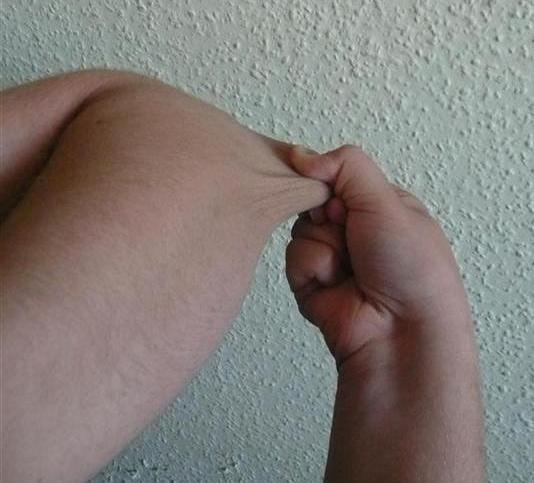
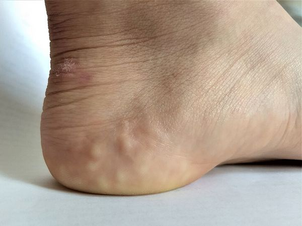
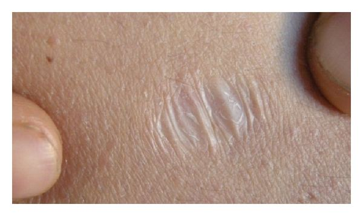
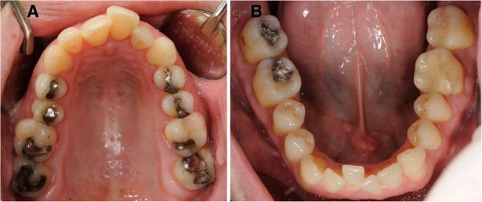
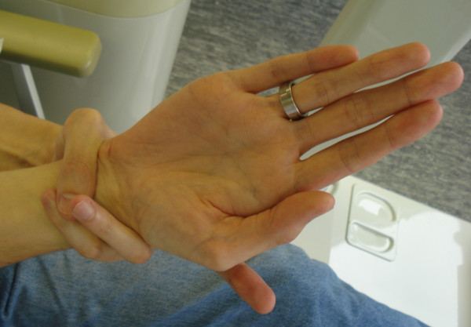

A practical guide to living well with hypermobile EDS and hypermobility spectrum disorder: what raises your risk, what to watch for, and which checks and treatments are worth doing. Written for both patients and the clinicians who care for them.
Hypermobile EDS is a condition of the connective tissue. Connective tissue is the material that holds your joints, skin, and blood vessels together and gives them support. In hEDS this tissue is more stretchy and less supportive than usual. The most common features are loose joints that move too far or slip out of place, soft or velvety skin, easy bruising, and chronic pain.
hEDS is generally the least severe form of EDS. It does not shorten life expectancy. But it can affect many parts of the body at once, and the mix of symptoms is different for every person. No single person has all of them.
There is no blood test that confirms hEDS yet. The diagnosis is made by a doctor based on a set of physical findings, your family history, and ruling out other conditions.
You may also hear the term hypermobility spectrum disorder, or HSD. This is for people who have hypermobile joints that cause real symptoms but who do not tick every box on the hEDS checklist. HSD is not a milder or less real condition. The symptoms and their impact can be just as significant, and the care is the same. The two labels mostly tell us how the findings line up, not how much you are affected. Everything in this guide applies to both hEDS and HSD unless noted.
Hypermobile EDS is one of 14 recognized subtypes of Ehlers–Danlos syndrome and is by far the most common, while remaining the only subtype without an identified causative gene or available confirmatory molecular test. It sits on a clinical continuum with hypermobility spectrum disorder (HSD), which describes symptomatic joint hypermobility that does not meet full hEDS criteria. Management is essentially identical across hEDS and HSD, and this protocol applies to both unless a section states otherwise.
Diagnosis currently follows the 2017 International Classification of the Ehlers–Danlos Syndromes. This requires all three criteria: (1) generalized joint hypermobility by age- and sex-adjusted Beighton score (post-puberty ≥5/9; ≥4/9 over age 50); (2) two or more of Feature A (≥5 systemic connective tissue manifestations), Feature B (first-degree relative independently meeting criteria), and Feature C (musculoskeletal complications); and (3) exclusion of alternative diagnoses, including other heritable connective tissue disorders and, critically, vascular and classical EDS, Marfan syndrome, and Loeys–Dietz syndrome.
Hypermobility spectrum disorder is the diagnosis for people with symptomatic joint hypermobility who do not meet the full 2017 hEDS criteria, for example those with generalized hypermobility but fewer than the required systemic features, or those whose hypermobility is historical, localized, or peripheral. The 2017 framework defines several HSD patterns: generalized (G-HSD), peripheral (P-HSD), localized (L-HSD), and historical (H-HSD). The introduction of HSD in 2017 was deliberate, replacing the older and overlapping labels of joint hypermobility syndrome and benign joint hypermobility, and was designed to capture the large group of symptomatic patients who fall outside strict hEDS criteria so they are not left without a diagnosis or care.
A revision to the diagnostic criteria is anticipated, with the Ehlers–Danlos Society's international hEDS/HSD Criteria Review Study expected to report. Anticipated changes include broader joint assessment beyond the Beighton score and more formal incorporation of systemic comorbidities such as dysautonomia and GI dysfunction, which may also shift where the hEDS/HSD boundary sits. Until published, the 2017 criteria remain the standard.
The summary above paraphrases these criteria. GeneReviews (Hakim, updated 22 Feb 2024) gives them in full. All three criteria are required, in an adult who has reached biological maturity:
Criterion 1: Generalized joint hypermobility (Beighton score)
Criterion 2: At least two of Features A, B, C





Criterion 3: All of the following
Source: Hakim A. Hypermobile Ehlers-Danlos Syndrome. In: Adam MP, et al., eds. GeneReviews®. Seattle (WA): University of Washington; 2004 (updated 22 Feb 2024). NBK1279. Criteria from Malfait et al. 2017.
Criterion 3 of the hEDS criteria asks the clinician to exclude other EDS types. The two most often considered are classical and vascular EDS. Both have a known molecular cause, so a suspected case should go to genetic testing rather than a clinical hEDS label. The table summarizes typical features; individual presentations vary and overlap.
See the full protocols: Classical EDS (cEDS) · Vascular EDS (vEDS) · Kyphoscoliotic EDS (kEDS).
| Feature | Hypermobile (hEDS) | Classical (cEDS) | Vascular (vEDS) |
|---|---|---|---|
| Gene (inheritance) | Unknown (autosomal dominant pattern) | COL5A1 or COL5A2; rarely COL1A1 (autosomal dominant) | COL3A1; rarely COL1A1 (autosomal dominant) |
| Genetic test | None available; clinical diagnosis using the 2017 criteria | Yes; molecular confirmation recommended | Yes; molecular confirmation recommended |
| Skin | Soft or velvety; at most mildly hyperextensible; scars usually mild | Markedly hyperextensible; wide atrophic (papyraceous) scars; molluscoid pseudotumours, subcutaneous spheroids; easy bruising | Thin, translucent skin with visible veins; extensive, easy bruising; not markedly hyperextensible |
| Joints | Generalized hypermobility (defining feature); subluxations, dislocations | Generalized hypermobility, often with complications | Hypermobility mostly in small joints (hands, feet) |
| Main risks | Chronic pain, fatigue, dysautonomia, functional GI symptoms; life expectancy generally not affected | Poor wound healing, wound dehiscence, hernias; mild aortic root dilation possible | Arterial dissection or rupture, bowel (often sigmoid) perforation, uterine rupture; pregnancy is high risk; reduced life expectancy |
| Face | No characteristic features | Not distinctive; epicanthal folds or scars on forehead or chin may be seen | May show thin lips and nose, prominent eyes, small chin, lobeless ears; often subtle or absent |
Sources: Hakim A. Hypermobile EDS. GeneReviews® (updated 2024), NBK1279. Bowen JM, et al. Classic EDS. GeneReviews®, NBK1244. Byers PH. Vascular EDS. GeneReviews®, NBK1494. Malfait F, et al. The 2017 international classification of the Ehlers–Danlos syndromes. Am J Med Genet C Semin Med Genet. 2017;175(1):8–26. doi:10.1002/ajmg.c.31552.
HEDGE (Hypermobile Ehlers–Danlos Genetic Evaluation) is the Ehlers–Danlos Society’s study, launched in 2018 and run with the Broad Institute, the University of Illinois, Indiana University and the Hypermobility Biology Network. It used whole-genome sequencing on about 1,000 people with hEDS (confirmed by the 2017 criteria) and 45 with HSD from 86 countries. Each participant was compared with five ancestry-matched controls from the U.S. All of Us program. According to the Society’s 2025 update, fewer than 1% of participants had variants pointing to another connective tissue disorder (such as classical EDS, Marfan or Loeys–Dietz syndrome), which supports the clinical use of the 2017 criteria. No single gene explained hEDS or HSD. MTHFR showed no association. Rare TNXB variants were 3–5 times more common but still present in only about 1% of participants. KLK15 variants were not more common than in controls. That last point qualifies a separate peer-reviewed family study from the Norris lab at MUSC (Gensemer et al., iScience 2025), which found a KLK15 p.Gly226Asp variant segregating in two hEDS families and produced hEDS-like tendon and heart-valve changes in a knock-in mouse. Together, these results suggest KLK15 may matter in some families but is not a common cause. The HEDGE results so far come from a society update and conference abstracts (ASHG 2024), with related findings in a medRxiv preprint (GWAS meta-analysis). None of them is fully peer-reviewed, and none provides a clinical genetic test for hEDS.
Sources: The Ehlers–Danlos Society, The HEDGE Study, 2025 update. Gensemer C, et al. KLK15 alters connective tissues in hypermobile Ehlers-Danlos syndrome. iScience. 2025;28(9):113343. doi:10.1016/j.isci.2025.113343.
People often ask why there is no genetic test for hEDS when the other types of EDS have one. The honest answer is that hEDS is genetically complicated. The other EDS types are usually caused by a change in a single gene, often a collagen gene, which a lab can find. hEDS does not seem to work that way. Instead of one strong gene, it looks like many genes each add a small amount of risk, and these combine with each other and with life factors to produce the condition. This is called a polygenic, or complex, pattern.
This is why hEDS clearly runs in families, yet no single gene shows up on a test. It is not that the cause is missing. It is that the cause is spread across many small pieces we are only starting to map. Research is moving quickly, and the first large genetic studies have now found their first signals.
hEDS is the most common EDS subtype yet the least genetically understood, and HSD shares this lack of a molecular marker. Unlike the other EDS subtypes, which are caused by defined pathogenic variants in extracellular matrix proteins, collagen genes, or collagen-modifying enzymes, hEDS and HSD have no single causative gene and no molecular diagnostic test. Pedigrees show clear familial clustering and high heritability, which historically led to its description as autosomal dominant. Current evidence reframes this: hEDS is better understood as a genetically complex, likely polygenic condition in which many common and rare variants each contribute small effects, interacting with one another and with environmental and hormonal factors. The apparent dominant transmission in families reflects this aggregate heritable load rather than a single segregating allele in most cases.
Several lines of recent work are beginning to define the architecture. A 2025 GWAS meta-analysis (1,815 cases, 5,008 controls) identified the first genome-wide significant loci, including a regulatory region near ACKR3 on chromosome 2, with functional annotation implicating neuroimmune and pain-signaling pathways, and flagged additional candidates including SLC39A13 (a zinc transporter previously implicated in a rare recessive EDS) and PSMC3. The same work found significant genetic correlation between hEDS and joint hypermobility, ME/CFS, fibromyalgia, migraine, anxiety, depression, autism spectrum disorder, and GI disorders, consistent with shared heritable biology across these comorbid conditions. Candidate-gene research has separately implicated the kallikrein family (e.g. KLK15) on chromosome 19. The Ehlers–Danlos Society's HEDGE study, the largest dedicated hEDS sequencing effort (over 1,000 participants), reported at ASHG that no single gene explains hEDS, pointing instead to multiple rare variants and complex interactions; its first peer-reviewed papers began appearing from late 2025.
There is no clinical genetic test that confirms or excludes hEDS. Sequencing is still valuable, but for a different purpose: to exclude the testable connective tissue disorders that mimic hEDS and carry higher risk. A normal panel does not rule out hEDS; it rules out the more dangerous alternatives.
The candidate genes above (ACKR3, SLC39A13, KLK15, PSMC3) are research findings, not validated clinical tests. They should not be ordered or interpreted as diagnostic for hEDS, and polygenic risk scores for hEDS are not yet clinically actionable.
hEDS and HSD are not cancer syndromes, so this is not about lifetime cancer risk. Instead, the table below shows the body systems these conditions can affect and roughly how often. Use it to know what is worth watching for. Most issues are manageable, and many people never develop the more serious ones.
| Domain | Typical burden | Level | What it means clinically |
|---|---|---|---|
| Joint instability, subluxation, dislocation | Very common (defining feature) | High | Recurrent, often spontaneous; more frequent in younger patients and females |
| Chronic pain (myofascial + neuropathic) | Very common | High | Onset adolescence to mid-life; major driver of disability and reduced quality of life |
| Early osteoarthritis / low bone density | Common | Moderate | Driven by joint stress, deconditioning, reduced weight-bearing |
| Autonomic dysfunction / POTS | Common | Moderate | Strong association; orthostatic intolerance, palpitations, fatigue, syncope |
| GI dysmotility (reflux, bloating, constipation) | Common | Moderate | Functional; rarely structural; overlaps with autonomic dysfunction |
| Mast cell activation symptoms | Subset | Moderate | Enriched in the POTS+hEDS group; flushing, allergic-type and GI symptoms |
| Mild aortic root dilation / mitral valve prolapse | Uncommon, usually non-progressive | Low | Aortic root dilation ~2–3% in hEDS cohorts; baseline echo indicated, rarely progressive |
| Pregnancy complications (PROM, rapid labour) | Variable | Low–Mod | Generally manageable with planning; not a contraindication to pregnancy |
Levels reflect the typical frequency and clinical weight of each domain in hEDS and HSD, not a validated, gene-stratified risk model (none exists, because no single gene is known). They are offered as a practical surveillance guide and apply to both conditions.
Loose, unstable joints are the core of hEDS. The most effective treatment is not a pill. It is steady, gentle strengthening that teaches the muscles around a joint to do the support work the ligaments cannot. This takes months, and flares are normal, but it works.
The goal is to build strength without forcing joints to their extreme range. Low-impact activity such as swimming, cycling, and controlled resistance work is ideal. High-impact and contact sports raise the risk of dislocation and should usually be avoided.
The ligaments that hold the skull on the top of the spine, and the first two neck bones together, can be lax in EDS. In a small number of people this allows too much movement at the top of the neck, called craniocervical instability (CCI) or atlantoaxial instability (AAI). It can cause headaches at the back of the head, neck pain, dizziness and other symptoms that are often worse when upright or when moving the neck.
Most neck pain and headache in hEDS is not caused by instability. Diagnosing CCI is difficult and experts still disagree on how best to do it. Treatment starts with careful physiotherapy and protecting the neck. Surgery is considered only for a small number of people after specialist assessment.
What it is. Ligamentous laxity at the atlanto-occipital and atlantoaxial joints can cause instability at the craniocervical junction. It is described in all forms of EDS and may coexist with Chiari malformation type I or basilar invagination. Motor delay, headache and quadriparesis have been attributed to it.1 The 2017 classification does not include CCI among the hEDS criteria.2
Symptoms reported. Occipital or suboccipital headache (often positional, worse upright or with neck movement), neck pain, dizziness, tinnitus, visual disturbance, paresthesias or numbness, "brain fog", dysphagia, syncope or presyncope, and dysautonomia.3,4 These symptoms are non-specific and overlap with migraine, POTS and other common features of hEDS.
The diagnosis and management of CCI in EDS remain controversial. There are no validated diagnostic criteria or clinical practice guidelines, and published data are mostly case series from specialist surgical centres. Expert groups have called for consensus criteria based on stronger evidence.1,3
Pain in hEDS comes from unstable joints, small repeated injuries, and muscles working overtime to hold things together. Over time the nervous system can also become more sensitive to pain. Because the causes are layered, the best results come from combining approaches rather than relying on one.
Medication is a helper, not the foundation. The foundation is movement, sleep, stress management, and pacing. Opioids are a last resort because they work poorly for this kind of pain and carry real risks.
Bracing and external supports. Joint braces, ring splints, soft cervical supports, and full-body or compression garments can improve proprioception, reduce subluxations, and limit muscular strain during activity. These are adjuncts to a strengthening and proprioceptive program, not a replacement for it, and prolonged reliance on rigid bracing should be avoided to prevent deconditioning. An occupational therapist or physiotherapist can fit and individualize supports. One option some patients find useful is the BodyBraid, a latex-free elastic wrap that adds gentle external reinforcement along the body's spiral lines of support. Because it adds resistance without restricting range of motion, it can sharpen joint position sense, steady posture, and reduce the strain and fatigue of holding unstable joints (discount link). Evidence is limited to patient experience rather than trials, so use it alongside, not instead of, strengthening.
Non-invasive vagus nerve stimulation. Transcutaneous auricular vagus nerve stimulation has been studied for autonomic balance and pain modulation in small trials (see Section 12 for the evidence caveats). The evidence remains preliminary; it may be considered as an adjunct in motivated patients but is not established therapy. For patients who want to try it, the Nurosym (Nuropod) is a wearable ear-clip device (referral and discount link). Because hEDS often comes with dysautonomia, poor sleep, fatigue, and pain, the potential benefit is calmer autonomic balance (the "rest and digest" state), which may ease palpitations, lightheadedness, and fatigue. Here is a short video on how to use the Nurosym, plus some helpful resources.
Red light therapy, also called photobiomodulation, shines low-power red or near-infrared light on the skin. It does not heat or burn tissue. The light is absorbed by the energy-producing parts of cells (mitochondria), and lab and animal studies show it can calm inflammation. Some people use it for sore joints, fatigue, or sleep. It is a low-risk add-on worth trying if you are curious, but it has not been tested specifically in hEDS.
Proposed mechanism. Red and near-infrared light is absorbed mainly by cytochrome c oxidase in mitochondria, increasing ATP, nitric oxide, and brief, signalling-level reactive oxygen species. In inflamed or oxidatively stressed tissue this is followed by lower inflammatory markers (prostaglandins, reactive nitrogen species, M1 macrophage markers). The dose response is biphasic: too little does nothing and too much can be inhibitory.1
Inflammation and joint pain. Anti-inflammatory effects are among the most reproducible findings in cell and animal work.1 In people, a systematic review of 11 RCTs (565 patients) in chronic joint disorders found clinically meaningful pain reduction when adequate doses were applied to the joint capsule, though the trials were heterogeneous.2
Fatigue and widespread pain. No trials in ME/CFS were found. In fibromyalgia, a meta-analysis of 9 small RCTs (325 patients) found improvements in pain, tender points, fatigue, and stiffness versus sham laser, but no added benefit over a structured exercise program alone.3
Sleep. A small study of 20 elite female athletes found that 30 minutes of whole-body red light nightly for 14 days improved sleep quality scores and melatonin levels.4 A 2026 meta-analysis of 5 RCTs (240 participants) found a modest improvement in sleep quality with wide confidence intervals.5
hEDS/HSD. There are no clinical trials of photobiomodulation in hEDS or HSD. Any benefit is extrapolated from joint-pain, fibromyalgia, and sleep studies.
People with hEDS are more likely to have lower bone density. This happens partly because pain and unstable joints make it harder to stay active and do the weight-bearing exercise that keeps bones strong. Frequent slips and falls also add fracture risk. The good news is that bone health responds well to exercise, vitamin D, calcium, and early screening.
The evidence linking hEDS to reduced bone mineral density is observational and likely multifactorial (connective tissue effects on bone matrix, deconditioning, reduced loading). Treat bone health as you would in any patient with elevated risk factors, with a lower threshold for baseline DXA given the activity limitations hEDS imposes.
Low-intensity whole-body vibration has been studied as an adjunct for bone density and balance, with mixed results (see Section 12). The signal studied for bone is a gentle, low-magnitude one. The higher-intensity vibration delivered by inexpensive consumer plates is a different, unstudied stimulus and should not be assumed equivalent. If considered at all, it is an optional adjunct and not a substitute for weight-bearing exercise, resistance training, and standard bone-health measures.
Unlike some other forms of EDS, hEDS does not cause dangerous artery problems. A small number of people have a mildly enlarged aortic root or a mitral valve that does not close perfectly. These are usually mild and stable. A single heart ultrasound at diagnosis is the standard check.
Many people with hEDS have trouble with the automatic nervous system, the part that controls heart rate and blood pressure without you thinking about it. The most common form is POTS, where your heart races and you feel dizzy, lightheaded, or exhausted when you stand up. This happens because stretchy blood vessels let blood pool in the legs. It is uncomfortable but treatable, often without medication.
The association is strong: hEDS patients are markedly more likely to carry a POTS diagnosis than the general population, and hypermobility is common among POTS cohorts. There are no POTS therapies targeted specifically to hEDS; management mirrors general POTS care. Recognizing and treating dysautonomia frequently improves fatigue, GI symptoms, and overall function. Alongside fluids, salt, and compression, some patients add non-invasive auricular vagus nerve stimulation such as the Nurosym (Nuropod) to support autonomic balance (see how to use the Nurosym); evidence in hEDS and POTS is preliminary, so it is an optional adjunct.
Stomach and bowel symptoms are common in hEDS: reflux, bloating, feeling full quickly, constipation, or loose stools. These are usually problems with how the gut moves rather than damage to the gut itself. Some people also have mast cell symptoms, where the body's allergy cells are overactive, causing flushing, hives, or food reactions. Both can be managed.
Sources: Valent P, et al. Int Arch Allergy Immunol. 2012;157(3):215–225 (doi); Valent P, et al. J Allergy Clin Immunol Pract. 2019;7(4):1125–1133.e1 (doi).
hEDS, POTS, and MCAS co-occur far more than chance. In patients with both POTS and hEDS, reported MCAS prevalence is substantially higher than in hEDS without POTS. The proposed shared mechanism involves connective tissue, autonomic, and mast cell interplay. Practically: when one is present, screen for the other two.
There is no blood test that diagnoses hypermobile EDS. Blood work is used to look for other conditions that can cause or worsen tiredness, pain, dizziness or gut symptoms, such as low iron, low vitamins, thyroid problems or celiac disease. Some tests are only needed if you have particular symptoms.
Where to have blood drawn: in Ontario, usually at LifeLabs (see the LifeLabs instructions). Outside Ontario, the clinic will tell you where to go.
Sources: Malfait F, et al. Am J Med Genet C. 2017;175(1):8–26 (doi); Tinkle B, et al. Am J Med Genet C. 2017;175(1):48–69 (doi); Hakim A, et al. Am J Med Genet C. 2017;175(1):168–174 (doi); Raj SR, et al. Canadian Cardiovascular Society position statement on POTS. Can J Cardiol. 2020;36(3):357–372 (doi); Rubio-Tapia A, et al. ACG guidelines: celiac disease. Am J Gastroenterol. 2023;118(1):59–76 (doi); Valent P, et al. Int Arch Allergy Immunol. 2012;157(3):215–225 (doi).
hEDS is not a reason to avoid pregnancy. Most pregnancies go well with planning. Some women have faster labour, early waters breaking, or more joint pain as the pregnancy goes on. It is also worth telling your dentist and anesthetist that you have hEDS, because local anesthetics sometimes work less well, which is easily managed once they know.
Obstetric risk in hEDS is generally lower and more manageable than in vascular EDS, where pregnancy carries serious vascular and uterine rupture risk. This distinction reinforces the importance of confirming subtype before counselling.
hEDS runs in families. In practice we often see it passed from one generation to the next in a pattern that looks autosomal dominant, so a parent with hEDS has roughly a 1 in 2 chance of a child inheriting the tendency. But the biology underneath is more complex than one gene: many small genetic factors add up, which is why no single gene shows on a test and why relatives can be affected very differently, some barely, some severely. Because of this, we cannot predict how strongly a child will be affected, and there is no test to confirm hEDS or to test family members for it.
Daily habits do a lot of the work in hEDS. There is no single "EDS diet" that cures the condition, but the way you eat, hydrate, sleep, and move changes how you feel week to week. The approach here is systems-based: instead of treating each symptom in isolation, we look at the systems underneath, your gut, your nervous system, inflammation, and nutrient status, and support each one where there is a reasonable basis to do so. The goal is to give your connective tissue, muscles, and energy systems the raw materials and the calm they need to work better.
Below I explain not just what to do, but why it helps, so the changes feel worth keeping.
Lifestyle change in hEDS is not generic wellness advice. Each pillar maps to a mechanism that is dysregulated in this population. Framing the rationale improves adherence, which is the rate-limiting step for every intervention in this protocol.
Dr. Heidi Collins is a physician who also has hEDS and has lectured extensively on nutrition and supplementation for EDS. Her talk is a useful, patient-friendly deep dive into the dietary and micronutrient approach described above.
Some newer approaches are being studied for hEDS symptoms. They are promising but not yet proven, so think of them as add-ons to try alongside the established treatments, not replacements for them. Talk to your doctor before spending money on devices or therapies marketed online.
Vagus nerve stimulation (VNS). Non-invasive auricular VNS is being studied for chronic pain and inflammation via the cholinergic anti-inflammatory pathway, and for autonomic balance in dysautonomia. Early signals are of interest but evidence specific to hEDS is limited. Reasonable as an adjunct in motivated patients; not a substitute for first-line care.
Whole-body vibration (WBV) platforms. Studied as an adjunct for bone density and balance by mimicking weight-bearing load. Trial results are mixed and modest. May complement, but not replace, exercise, vitamin D/calcium, and standard osteoporosis therapy.
Revised diagnostic criteria. The anticipated hEDS/HSD criteria update is expected to broaden joint assessment and formally incorporate systemic comorbidities. This may reclassify some current HSD patients and refine the phenotype.
Gene discovery. The HEDGE study and recent GWAS meta-analyses are beginning to define the polygenic architecture of hEDS, with early candidate loci near ACKR3, SLC39A13, KLK15, and PSMC3. These are research findings, not yet clinical tests, but they point toward future molecular subtyping and, eventually, the possibility of a genetic test or polygenic risk tool. Watch this space over the next few years.
Disclaimer. This protocol is intended to support, not replace, clinical judgment and individualized care. It is a practice aid for patients and clinicians and does not constitute a personalized medical recommendation. Guidelines for hypermobile EDS and its comorbidities continue to evolve, and a revision to the diagnostic criteria is anticipated. Verify all start ages, surveillance intervals, screening thresholds, and management details against the current versions of the relevant guidelines and society statements before applying them to an individual patient.
Andrew Shuen, MD PhD, FRCPC, DABMGG · Medical Geneticist · Division of Medical Genetics, Jewish General Hospital (CIUSSS West-Central Montreal) · McGill University · 3755 Côte Sainte-Catherine Road, Montreal QC H3T 1E2 · andrew.shuen.med@ssss.gouv.qc.ca · 514 340 8222, ext. 23965
Un guide pratique pour bien vivre avec le SED hypermobile et le trouble du spectre de l'hypermobilité : ce qui augmente votre risque, ce qu'il faut surveiller, et quels examens et traitements valent la peine. Rédigé pour les patients et pour les cliniciens qui les soignent.
Le SED hypermobile est un trouble du tissu conjonctif. Le tissu conjonctif est la matière qui tient ensemble vos articulations, votre peau et vos vaisseaux sanguins et qui leur donne du soutien. Dans le SEDh, ce tissu est plus élastique et moins solide que la normale. Les signes les plus fréquents sont des articulations lâches qui vont trop loin ou se déboîtent, une peau douce ou veloutée, des ecchymoses faciles et une douleur chronique.
Le SEDh est généralement la forme la moins sévère de SED. Il ne réduit pas l'espérance de vie. Mais il peut toucher plusieurs parties du corps à la fois, et la combinaison de symptômes est différente chez chaque personne. Personne ne les présente tous.
Il n'existe pas encore de test sanguin qui confirme le SEDh. Le diagnostic est posé par un médecin à partir d'un ensemble de constats physiques, de vos antécédents familiaux et de l'exclusion d'autres maladies.
Vous entendrez peut-être aussi le terme trouble du spectre de l'hypermobilité, ou TSH. Il s'applique aux personnes dont les articulations hypermobiles causent de vrais symptômes mais qui ne cochent pas toutes les cases de la liste du SEDh. Le TSH n'est pas une condition plus légère ou moins réelle. Les symptômes et leur impact peuvent être tout aussi importants, et les soins sont les mêmes. Les deux étiquettes indiquent surtout comment les constats s'alignent, et non à quel point vous êtes touché. Tout ce qui est dans ce guide s'applique au SEDh et au TSH, sauf indication contraire.
Le SED hypermobile est l'un des 14 sous-types reconnus du syndrome d'Ehlers–Danlos et de loin le plus fréquent, tout en demeurant le seul sous-type sans gène causal identifié ni test moléculaire confirmatoire disponible. Il se situe sur un continuum clinique avec le trouble du spectre de l'hypermobilité (TSH), qui désigne une hypermobilité articulaire symptomatique ne satisfaisant pas tous les critères du SEDh. La prise en charge est essentiellement identique pour le SEDh et le TSH, et ce protocole s'applique aux deux sauf si une section indique le contraire.
Le diagnostic suit actuellement la Classification internationale 2017 des syndromes d'Ehlers–Danlos. Elle exige les trois critères : (1) hypermobilité articulaire généralisée selon le score de Beighton ajusté pour l'âge et le sexe (après la puberté ≥5/9; ≥4/9 après 50 ans); (2) au moins deux des éléments suivants : caractéristique A (≥5 manifestations systémiques du tissu conjonctif), caractéristique B (parent au premier degré satisfaisant indépendamment les critères) et caractéristique C (complications musculosquelettiques); et (3) exclusion des diagnostics alternatifs, dont d'autres troubles héréditaires du tissu conjonctif et, de façon cruciale, le SED vasculaire et classique, le syndrome de Marfan et le syndrome de Loeys–Dietz.
Le trouble du spectre de l'hypermobilité est le diagnostic des personnes ayant une hypermobilité articulaire symptomatique qui ne satisfont pas tous les critères 2017 du SEDh, par exemple celles avec une hypermobilité généralisée mais moins de manifestations systémiques que requis, ou celles dont l'hypermobilité est historique, localisée ou périphérique. Le cadre 2017 définit plusieurs patrons de TSH : généralisé (G-TSH), périphérique (P-TSH), localisé (L-TSH) et historique (H-TSH). L'introduction du TSH en 2017 était délibérée, remplaçant les anciennes étiquettes qui se chevauchaient (syndrome d'hypermobilité articulaire et hypermobilité articulaire bénigne), et visait à inclure le grand groupe de patients symptomatiques qui sortent des critères stricts du SEDh, afin qu'ils ne restent pas sans diagnostic ni soins.
Une révision des critères diagnostiques est attendue, l'étude internationale de révision des critères SEDh/TSH de la Ehlers–Danlos Society devant publier ses résultats. Les changements anticipés comprennent une évaluation articulaire plus large que le score de Beighton et une intégration plus formelle des comorbidités systémiques comme la dysautonomie et la dysfonction digestive, ce qui pourrait aussi déplacer la frontière entre le SEDh et le TSH. Jusqu'à publication, les critères 2017 demeurent la norme.
Le résumé ci-dessus paraphrase ces critères. GeneReviews (Hakim, mis à jour le 22 février 2024) les présente en entier. Les trois critères sont requis chez un adulte ayant atteint la maturité biologique :
Critère 1 : hypermobilité articulaire généralisée (score de Beighton)
Critère 2 : au moins deux des caractéristiques A, B, C
Critère 3 : toutes les conditions suivantes
Source : Hakim A. Hypermobile Ehlers-Danlos Syndrome. Dans : Adam MP, et al., éd. GeneReviews®. Seattle (WA) : University of Washington; 2004 (mis à jour le 22 février 2024). NBK1279. Critères tirés de Malfait et al. 2017.
Le critère 3 du SEDh demande d'exclure les autres types de SED. Les deux le plus souvent envisagés sont le SED classique et le SED vasculaire. Les deux ont une cause moléculaire connue : un cas suspect doit donc être orienté vers un test génétique plutôt que recevoir un diagnostic clinique de SEDh. Le tableau résume les signes typiques; les présentations varient et se chevauchent.
Voir les protocoles complets : SED classique (SEDc) · SED vasculaire (SEDv) · SED cyphoscoliotique (SEDcs).
| Caractéristique | Hypermobile (SEDh) | Classique (SEDc) | Vasculaire (SEDv) |
|---|---|---|---|
| Gène (transmission) | Inconnu (transmission de type autosomique dominant) | COL5A1 ou COL5A2; rarement COL1A1 (autosomique dominant) | COL3A1; rarement COL1A1 (autosomique dominant) |
| Test génétique | Aucun disponible; diagnostic clinique selon les critères de 2017 | Oui; confirmation moléculaire recommandée | Oui; confirmation moléculaire recommandée |
| Peau | Douce ou veloutée; au plus légèrement hyperextensible; cicatrices habituellement discrètes | Nettement hyperextensible; cicatrices atrophiques larges (papyracées); pseudotumeurs molluscoïdes, sphéroïdes sous-cutanés; ecchymoses faciles | Peau mince et translucide, veines visibles; ecchymoses étendues et faciles; peu hyperextensible |
| Articulations | Hypermobilité généralisée (signe définissant); subluxations, luxations | Hypermobilité généralisée, souvent compliquée | Hypermobilité surtout des petites articulations (mains, pieds) |
| Risques principaux | Douleur chronique, fatigue, dysautonomie, symptômes digestifs fonctionnels; espérance de vie généralement non touchée | Mauvaise cicatrisation, déhiscence des plaies, hernies; légère dilatation de la racine aortique possible | Dissection ou rupture artérielle, perforation intestinale (souvent sigmoïde), rupture utérine; grossesse à haut risque; espérance de vie réduite |
| Visage | Aucun trait caractéristique | Non distinctif; replis épicanthiques ou cicatrices du front ou du menton possibles | Lèvres et nez fins, yeux proéminents, petit menton, lobes d'oreille absents possibles; souvent discrets ou absents |
Sources : Hakim A. Hypermobile EDS. GeneReviews® (mis à jour en 2024), NBK1279. Bowen JM, et al. Classic EDS. GeneReviews®, NBK1244. Byers PH. Vascular EDS. GeneReviews®, NBK1494. Malfait F, et al. The 2017 international classification of the Ehlers–Danlos syndromes. Am J Med Genet C Semin Med Genet. 2017;175(1):8–26. doi:10.1002/ajmg.c.31552.
HEDGE (Hypermobile Ehlers–Danlos Genetic Evaluation) est l'étude de la Ehlers–Danlos Society, lancée en 2018 et menée avec le Broad Institute, l'Université de l'Illinois, l'Université de l'Indiana et le Hypermobility Biology Network. Elle a séquencé le génome complet d'environ 1 000 personnes atteintes du SEDh (confirmé selon les critères 2017) et de 45 personnes atteintes du TSH, provenant de 86 pays. Chaque participant a été comparé à cinq témoins d'ascendance appariée tirés du programme américain All of Us. Selon la mise à jour 2025 de la Société, moins de 1 % des participants portaient des variants évoquant un autre trouble du tissu conjonctif (comme le SED classique, le syndrome de Marfan ou de Loeys–Dietz), ce qui appuie l'utilisation clinique des critères 2017. Aucun gène unique n'expliquait le SEDh ni le TSH. MTHFR ne montrait aucune association. Les variants rares de TNXB étaient 3 à 5 fois plus fréquents, mais présents chez environ 1 % seulement des participants. Les variants de KLK15 n'étaient pas plus fréquents que chez les témoins. Ce dernier point nuance une étude familiale distincte du laboratoire Norris (MUSC), révisée par les pairs (Gensemer et al., iScience 2025). Celle-ci avait trouvé un variant KLK15 p.Gly226Asp ségrégeant dans deux familles atteintes du SEDh et reproduit des atteintes des tendons et des valves cardiaques semblables au SEDh chez une souris knock-in. Ensemble, ces résultats suggèrent que KLK15 pourrait jouer un rôle dans certaines familles, sans être une cause fréquente. Les résultats de HEDGE proviennent jusqu'ici d'une mise à jour de la Société et de résumés de congrès (ASHG 2024), avec des résultats connexes dans une prépublication medRxiv (méta-analyse GWAS). Aucun n'est encore entièrement révisé par les pairs, et aucun ne fournit de test génétique clinique pour le SEDh.
Sources : The Ehlers–Danlos Society, The HEDGE Study, mise à jour 2025. Gensemer C, et al. KLK15 alters connective tissues in hypermobile Ehlers-Danlos syndrome. iScience. 2025;28(9):113343. doi:10.1016/j.isci.2025.113343.
On demande souvent pourquoi il n'existe pas de test génétique pour le SEDh alors que les autres types de SED en ont un. La réponse honnête est que le SEDh est génétiquement compliqué. Les autres types de SED sont habituellement causés par un changement dans un seul gène, souvent un gène du collagène, qu'un laboratoire peut trouver. Le SEDh ne semble pas fonctionner ainsi. Au lieu d'un seul gène fort, il semble que de nombreux gènes ajoutent chacun une petite part de risque, et qu'ils se combinent entre eux et avec des facteurs de vie pour produire la condition. On appelle cela un patron polygénique, ou complexe.
C'est pourquoi le SEDh est clairement familial, mais qu'aucun gène unique n'apparaît au test. Ce n'est pas que la cause manque. C'est que la cause est répartie sur de nombreuses petites pièces que l'on commence à peine à cartographier. La recherche avance vite, et les premières grandes études génétiques ont maintenant trouvé leurs premiers signaux.
Le SEDh est le sous-type de SED le plus fréquent, mais le moins compris sur le plan génétique, et le TSH partage cette absence de marqueur moléculaire. Contrairement aux autres sous-types de SED, causés par des variants pathogènes définis dans des protéines de la matrice extracellulaire, des gènes du collagène ou des enzymes de modification du collagène, le SEDh et le TSH n'ont pas de gène causal unique ni de test moléculaire diagnostique. Les arbres généalogiques montrent un regroupement familial clair et une héritabilité élevée, ce qui a historiquement mené à le décrire comme autosomique dominant. Les données actuelles recadrent cela : le SEDh se comprend mieux comme une condition génétiquement complexe, probablement polygénique, dans laquelle de nombreux variants communs et rares contribuent chacun de petits effets, en interaction entre eux et avec des facteurs environnementaux et hormonaux. La transmission apparemment dominante dans les familles reflète cette charge héréditaire agrégée plutôt qu'un seul allèle ségrégeant dans la plupart des cas.
Plusieurs travaux récents commencent à définir cette architecture. Une méta-analyse GWAS de 2025 (1 815 cas, 5 008 témoins) a identifié les premiers loci significatifs à l'échelle du génome, dont une région régulatrice près d'ACKR3 sur le chromosome 2, l'annotation fonctionnelle impliquant des voies neuro-immunes et de signalisation de la douleur, et a signalé d'autres candidats dont SLC39A13 (un transporteur de zinc déjà impliqué dans une forme rare et récessive de SED) et PSMC3. Ce même travail a trouvé une corrélation génétique significative entre le SEDh et l'hypermobilité articulaire, l'EM/SFC, la fibromyalgie, la migraine, l'anxiété, la dépression, le trouble du spectre de l'autisme et les troubles digestifs, compatible avec une biologie héréditaire partagée entre ces conditions comorbides. La recherche sur les gènes candidats a aussi impliqué séparément la famille des kallikréines (p. ex. KLK15) sur le chromosome 19. L'étude HEDGE de la Ehlers–Danlos Society, le plus grand effort de séquençage dédié au SEDh (plus de 1 000 participants), a rapporté à l'ASHG qu'aucun gène unique n'explique le SEDh, pointant plutôt vers de multiples variants rares et des interactions complexes; ses premiers articles révisés par les pairs ont commencé à paraître à partir de la fin de 2025.
Il n'existe pas de test génétique clinique qui confirme ou exclut le SEDh. Le séquençage reste utile, mais dans un autre but : exclure les troubles du tissu conjonctif testables qui imitent le SEDh et comportent un risque plus élevé. Un panel normal n'écarte pas le SEDh; il écarte les alternatives plus dangereuses.
Les gènes candidats ci-dessus (ACKR3, SLC39A13, KLK15, PSMC3) sont des résultats de recherche, et non des tests cliniques validés. Ils ne doivent pas être demandés ni interprétés comme diagnostiques du SEDh, et les scores de risque polygénique pour le SEDh ne sont pas encore exploitables en clinique.
Le SEDh et le TSH ne sont pas des syndromes de cancer; il ne s'agit donc pas d'un risque de cancer à vie. Le tableau ci-dessous montre plutôt les systèmes du corps que ces conditions peuvent toucher et à quelle fréquence approximative. Servez-vous-en pour savoir quoi surveiller. La plupart des problèmes se gèrent bien, et beaucoup de gens ne développent jamais les plus graves.
| Domaine | Fardeau habituel | Niveau | Signification clinique |
|---|---|---|---|
| Instabilité articulaire, subluxation, luxation | Très fréquent (signe déterminant) | Élevé | Récurrent, souvent spontané; plus fréquent chez les jeunes et les femmes |
| Douleur chronique (myofasciale + neuropathique) | Très fréquent | Élevé | Début de l'adolescence à la quarantaine; cause majeure d'incapacité et de baisse de qualité de vie |
| Arthrose précoce / faible densité osseuse | Fréquent | Modéré | Lié au stress articulaire, au déconditionnement, à la réduction de la mise en charge |
| Dysfonction autonome / SThPO | Fréquent | Modéré | Association forte; intolérance orthostatique, palpitations, fatigue, syncope |
| Dysmotilité digestive (reflux, ballonnement, constipation) | Fréquent | Modéré | Fonctionnel; rarement structurel; chevauchement avec la dysfonction autonome |
| Symptômes d'activation mastocytaire | Sous-groupe | Modéré | Enrichi dans le groupe SThPO+SEDh; bouffées, symptômes allergiques et digestifs |
| Dilatation légère de la racine aortique / prolapsus mitral | Peu fréquent, habituellement non évolutif | Faible | Dilatation aortique ~2–3 % dans les cohortes SEDh; échographie de base indiquée, rarement évolutive |
| Complications de grossesse (RPM, travail rapide) | Variable | Faible–Mod | Généralement gérable avec planification; pas une contre-indication à la grossesse |
Les niveaux reflètent la fréquence et le poids clinique habituels de chaque domaine dans le SEDh et le TSH, et non un modèle de risque validé et stratifié par gène (il n'en existe pas, aucun gène unique n'étant connu). Ils sont offerts comme guide pratique de surveillance et s'appliquent aux deux conditions.
Des articulations lâches et instables sont au cœur du SEDh. Le traitement le plus efficace n'est pas un médicament. C'est un renforcement doux et régulier qui apprend aux muscles autour d'une articulation à faire le travail de soutien que les ligaments ne peuvent pas faire. Cela prend des mois, et les poussées sont normales, mais ça fonctionne.
Le but est de bâtir de la force sans forcer les articulations jusqu'à leur amplitude extrême. Les activités à faible impact comme la natation, le vélo et le travail de résistance contrôlé sont idéales. Les sports à fort impact et de contact augmentent le risque de luxation et devraient généralement être évités.
Les ligaments qui maintiennent le crâne sur le haut de la colonne, et les deux premières vertèbres du cou entre elles, peuvent être lâches dans le SED. Chez un petit nombre de personnes, cela permet trop de mouvement en haut du cou : on parle d'instabilité craniocervicale (ICC) ou d'instabilité atlanto-axiale (IAA). Elle peut causer des maux de tête à l'arrière de la tête, des douleurs au cou, des étourdissements et d'autres symptômes, souvent pires en position debout ou lors des mouvements du cou.
La plupart des douleurs au cou et des maux de tête dans le SEDh ne sont pas dus à une instabilité. Le diagnostic d'ICC est difficile et les experts ne s'entendent pas encore sur la meilleure façon de le poser. Le traitement commence par une physiothérapie prudente et la protection du cou. La chirurgie n'est envisagée que chez un petit nombre de personnes, après une évaluation spécialisée.
Définition. La laxité ligamentaire des articulations atlanto-occipitale et atlanto-axiale peut entraîner une instabilité de la jonction craniocervicale. Elle est décrite dans toutes les formes de SED et peut coexister avec une malformation de Chiari de type I ou une impression basilaire. Un retard moteur, des céphalées et une quadriparésie y ont été attribués.1 La classification de 2017 n'inclut pas l'ICC parmi les critères du SEDh.2
Symptômes rapportés. Céphalée occipitale ou sous-occipitale (souvent positionnelle, pire debout ou lors des mouvements du cou), douleur cervicale, étourdissements, acouphènes, troubles visuels, paresthésies ou engourdissements, « brouillard cérébral », dysphagie, syncope ou présyncope et dysautonomie.3,4 Ces symptômes ne sont pas spécifiques et chevauchent la migraine, le SThPO et d'autres manifestations fréquentes du SEDh.
Le diagnostic et la prise en charge de l'ICC dans le SED demeurent controversés. Il n'existe ni critères diagnostiques validés ni lignes directrices de pratique clinique, et les données publiées sont surtout des séries de cas de centres chirurgicaux spécialisés. Des groupes d'experts ont demandé des critères consensuels fondés sur des données plus solides.1,3
La douleur dans le SEDh provient d'articulations instables, de petites blessures répétées et de muscles qui travaillent sans cesse pour tout tenir en place. Avec le temps, le système nerveux peut aussi devenir plus sensible à la douleur. Comme les causes sont multiples, les meilleurs résultats viennent de la combinaison d'approches plutôt que d'une seule.
Le médicament est une aide, pas la fondation. La fondation, c'est le mouvement, le sommeil, la gestion du stress et le dosage de l'effort. Les opioïdes sont un dernier recours, car ils agissent mal sur ce type de douleur et comportent de vrais risques.
Orthèses et soutiens externes. Les orthèses articulaires, attelles annulaires, soutiens cervicaux souples et vêtements de compression peuvent améliorer la proprioception, réduire les subluxations et limiter la tension musculaire à l'effort. Ce sont des appoints à un programme de renforcement et de proprioception, et non un remplacement; il faut éviter une dépendance prolongée à une orthèse rigide pour prévenir le déconditionnement. Un ergothérapeute ou un physiothérapeute peut ajuster et individualiser ces soutiens. Certains patients apprécient le BodyBraid, une bande élastique sans latex qui offre un renforcement externe doux le long des lignes de soutien en spirale du corps. Comme elle ajoute de la résistance sans limiter l'amplitude de mouvement, elle peut affiner la sensation de position des articulations, stabiliser la posture et réduire la tension et la fatigue liées au maintien d'articulations instables (lien de rabais). Les données se limitent à l'expérience des patients et non à des essais; à utiliser en complément du renforcement, jamais à sa place.
Stimulation vagale non invasive. La stimulation vagale auriculaire transcutanée a été étudiée pour l'équilibre autonome et la modulation de la douleur dans de petits essais (voir section 12 pour les réserves sur les données). Les données demeurent préliminaires; elle peut être envisagée comme appoint chez des patients motivés, mais n'est pas un traitement établi. Pour les patients qui souhaitent l'essayer, le Nurosym (Nuropod) est un appareil portable à pince d'oreille (lien de parrainage et de rabais). Comme le SEDh s'accompagne souvent de dysautonomie, de mauvais sommeil, de fatigue et de douleur, le bénéfice possible est un meilleur équilibre autonome (l'état « repos et digestion »), ce qui peut atténuer les palpitations, les étourdissements et la fatigue. Voici une courte vidéo sur l'utilisation du Nurosym, ainsi que des ressources utiles.
La luminothérapie rouge, aussi appelée photobiomodulation, consiste à exposer la peau à une lumière rouge ou proche infrarouge de faible puissance. Elle ne chauffe pas et ne brûle pas les tissus. La lumière est absorbée par les « centrales énergétiques » des cellules (les mitochondries), et des études en laboratoire et chez l'animal montrent qu'elle peut calmer l'inflammation. Certaines personnes l'utilisent pour les douleurs articulaires, la fatigue ou le sommeil. C'est un appoint à faible risque qui peut valoir la peine d'être essayé, mais il n'a pas été étudié spécifiquement dans le SEDh.
Mécanisme proposé. La lumière rouge et proche infrarouge est surtout absorbée par la cytochrome c oxydase des mitochondries, ce qui augmente l'ATP, l'oxyde nitrique et une brève production de dérivés réactifs de l'oxygène servant de signal. Dans les tissus enflammés ou soumis à un stress oxydatif, on observe ensuite une baisse des marqueurs inflammatoires (prostaglandines, dérivés réactifs de l'azote, marqueurs des macrophages M1). La réponse à la dose est biphasique : trop peu n'a pas d'effet et trop peut être inhibiteur.1
Inflammation et douleur articulaire. L'effet anti-inflammatoire est l'un des résultats les plus reproductibles en laboratoire et chez l'animal.1 Chez l'humain, une revue systématique de 11 ECR (565 patients) portant sur des troubles articulaires chroniques a montré une réduction de la douleur cliniquement significative lorsque des doses adéquates étaient appliquées sur la capsule articulaire, bien que les essais soient hétérogènes.2
Fatigue et douleur diffuse. Aucun essai dans l'EM/SFC n'a été trouvé. Dans la fibromyalgie, une méta-analyse de 9 petits ECR (325 patients) a montré une amélioration de la douleur, des points sensibles, de la fatigue et de la raideur par rapport au laser placebo, mais aucun bénéfice supplémentaire par rapport à un programme d'exercice structuré seul.3
Sommeil. Une petite étude chez 20 athlètes féminines d'élite a montré que 30 minutes de lumière rouge sur tout le corps chaque soir pendant 14 jours amélioraient les scores de qualité du sommeil et le taux de mélatonine.4 Une méta-analyse de 2026 portant sur 5 ECR (240 participants) a trouvé une amélioration modeste de la qualité du sommeil, avec de larges intervalles de confiance.5
SEDh/TSH. Il n'existe aucun essai clinique de photobiomodulation dans le SEDh ou le TSH. Tout bénéfice est extrapolé à partir d'études sur la douleur articulaire, la fibromyalgie et le sommeil.
Les personnes atteintes de SEDh sont plus susceptibles d'avoir une densité osseuse plus faible. Cela s'explique en partie parce que la douleur et l'instabilité articulaire rendent plus difficile le maintien d'une activité et des exercices en mise en charge qui gardent les os solides. Les glissades et les chutes fréquentes ajoutent aussi un risque de fracture. La bonne nouvelle : la santé osseuse répond bien à l'exercice, à la vitamine D, au calcium et au dépistage précoce.
Les données reliant le SEDh à une densité minérale osseuse réduite sont observationnelles et probablement multifactorielles (effets du tissu conjonctif sur la matrice osseuse, déconditionnement, réduction de la mise en charge). Traitez la santé osseuse comme chez tout patient à facteurs de risque élevés, avec un seuil plus bas pour une DXA de base vu les limitations d'activité qu'impose le SEDh.
La vibration corps entier de faible intensité a été étudiée comme appoint pour la densité osseuse et l'équilibre, avec des résultats mitigés (voir section 12). Le signal étudié pour l'os est doux et de faible magnitude. La vibration de plus haute intensité des plateformes grand public bon marché est un stimulus différent et non étudié, qu'on ne peut présumer équivalent. Si elle est envisagée, c'est un appoint optionnel et non un substitut à l'exercice en mise en charge, à l'entraînement en résistance et aux mesures standard de santé osseuse.
Contrairement à certaines autres formes de SED, le SEDh ne cause pas de problèmes artériels dangereux. Un petit nombre de personnes ont une racine aortique légèrement élargie ou une valve mitrale qui ne ferme pas parfaitement. Ces situations sont habituellement légères et stables. Une seule échographie du cœur au moment du diagnostic est l'examen standard.
Beaucoup de personnes atteintes de SEDh ont des problèmes avec le système nerveux autonome, la partie qui contrôle le rythme cardiaque et la pression artérielle sans que vous y pensiez. La forme la plus fréquente est le SThPO (syndrome de tachycardie posturale orthostatique), où votre cœur s'emballe et vous vous sentez étourdi, faible ou épuisé en vous levant. Cela arrive parce que des vaisseaux élastiques laissent le sang s'accumuler dans les jambes. C'est inconfortable mais traitable, souvent sans médicament.
L'association est forte : les patients SEDh sont nettement plus susceptibles d'avoir un diagnostic de SThPO que la population générale, et l'hypermobilité est fréquente dans les cohortes de SThPO. Il n'existe pas de traitement du SThPO ciblé spécifiquement sur le SEDh; la prise en charge reflète les soins généraux du SThPO. Reconnaître et traiter la dysautonomie améliore souvent la fatigue, les symptômes digestifs et le fonctionnement global. En plus des liquides, du sel et de la compression, certains patients ajoutent une stimulation vagale auriculaire non invasive, comme le Nurosym (Nuropod), pour soutenir l'équilibre autonome (voir l'utilisation du Nurosym); les données dans le SEDh et le SThPO sont préliminaires, il s'agit donc d'un appoint facultatif.
Les symptômes d'estomac et d'intestin sont fréquents dans le SEDh : reflux, ballonnement, sensation d'être vite rassasié, constipation ou selles molles. Ce sont habituellement des problèmes de motilité du tube digestif plutôt que des dommages au tube digestif lui-même. Certaines personnes ont aussi des symptômes mastocytaires, où les cellules allergiques du corps sont hyperactives, causant bouffées, urticaire ou réactions alimentaires. Les deux se gèrent.
Sources : Valent P, et al. Int Arch Allergy Immunol. 2012;157(3):215–225 (doi); Valent P, et al. J Allergy Clin Immunol Pract. 2019;7(4):1125–1133.e1 (doi).
Le SEDh, le SThPO et le SAMa coexistent bien plus que par hasard. Chez les patients ayant à la fois un SThPO et un SEDh, la prévalence rapportée du SAMa est nettement plus élevée que dans le SEDh sans SThPO. Le mécanisme commun proposé fait intervenir le tissu conjonctif, le système autonome et les mastocytes. En pratique : quand l'un est présent, dépistez les deux autres.
Aucune prise de sang ne permet de diagnostiquer le SED hypermobile. Le bilan sanguin sert à rechercher d’autres problèmes qui peuvent causer ou aggraver la fatigue, la douleur, les étourdissements ou les symptômes digestifs, comme un manque de fer ou de vitamines, un problème de thyroïde ou la maladie cœliaque. Certains tests ne sont nécessaires que si vous avez des symptômes précis.
Où faire la prise de sang : en Ontario, habituellement chez LifeLabs (voir les instructions LifeLabs). À l’extérieur de l’Ontario, la clinique vous indiquera où aller.
Sources : Malfait F, et al. Am J Med Genet C. 2017;175(1):8–26 (doi); Tinkle B, et al. Am J Med Genet C. 2017;175(1):48–69 (doi); Hakim A, et al. Am J Med Genet C. 2017;175(1):168–174 (doi); Raj SR, et al. Canadian Cardiovascular Society énoncé de position sur le SThPO. Can J Cardiol. 2020;36(3):357–372 (doi); Rubio-Tapia A, et al. lignes directrices de l’ACG : maladie cœliaque. Am J Gastroenterol. 2023;118(1):59–76 (doi); Valent P, et al. Int Arch Allergy Immunol. 2012;157(3):215–225 (doi).
Le SEDh n'est pas une raison d'éviter la grossesse. La plupart des grossesses se déroulent bien avec de la planification. Certaines femmes ont un travail plus rapide, une rupture précoce des eaux ou plus de douleurs articulaires au fil de la grossesse. Il vaut aussi la peine de dire à votre dentiste et à votre anesthésiste que vous avez un SEDh, car les anesthésiques locaux fonctionnent parfois moins bien, ce qui se gère facilement une fois qu'ils le savent.
Le risque obstétrical dans le SEDh est généralement plus faible et plus gérable que dans le SED vasculaire, où la grossesse comporte un risque vasculaire et de rupture utérine sérieux. Cette distinction renforce l'importance de confirmer le sous-type avant de conseiller.
Le SEDh est familial. En pratique, on le voit souvent passer d'une génération à l'autre selon un patron qui ressemble à l'autosomique dominant, donc un parent atteint a environ 1 chance sur 2 qu'un enfant hérite de la prédisposition. Mais la biologie sous-jacente est plus complexe qu'un seul gène : de nombreux petits facteurs génétiques s'additionnent, ce qui explique pourquoi aucun gène unique n'apparaît au test et pourquoi les proches peuvent être touchés très différemment, certains à peine, d'autres sévèrement. Pour cette raison, on ne peut pas prédire à quel point un enfant sera atteint, et il n'existe pas de test pour confirmer le SEDh ni pour tester les membres de la famille.
Les habitudes quotidiennes font une grande partie du travail dans le SEDh. Il n'existe pas de « régime SED » unique qui guérit la maladie, mais votre façon de manger, de vous hydrater, de dormir et de bouger change comment vous vous sentez d'une semaine à l'autre. L'approche ici est systémique : au lieu de traiter chaque symptôme isolément, on regarde les systèmes sous-jacents, votre intestin, votre système nerveux, l'inflammation et votre statut nutritionnel, et on soutient chacun d'eux lorsqu'il existe une base raisonnable de le faire. Le but est de donner à votre tissu conjonctif, à vos muscles et à vos systèmes d'énergie les matières premières et le calme dont ils ont besoin pour mieux fonctionner.
Ci-dessous, j'explique non seulement quoi faire, mais pourquoi cela aide, pour que les changements valent la peine d'être maintenus.
Le changement de mode de vie dans le SEDh n'est pas un conseil de bien-être générique. Chaque pilier correspond à un mécanisme dérégulé dans cette population. Expliquer la raison améliore l'observance, qui est l'étape limitante de toutes les interventions de ce protocole.
La Dre Heidi Collins est une médecin qui est elle-même atteinte de SEDh et qui a beaucoup enseigné sur la nutrition et la supplémentation dans le SED. Sa conférence est une plongée utile et accessible dans l'approche alimentaire et micronutritionnelle décrite ci-dessus.
Certaines approches plus récentes sont à l'étude pour les symptômes du SEDh. Elles sont prometteuses mais pas encore prouvées; voyez-les donc comme des compléments à essayer en parallèle des traitements établis, et non comme des remplacements. Parlez-en à votre médecin avant de dépenser pour des appareils ou des thérapies vendus en ligne.
Stimulation du nerf vague (SNV). La SNV auriculaire non invasive est à l'étude pour la douleur chronique et l'inflammation via la voie anti-inflammatoire cholinergique, et pour l'équilibre autonome dans la dysautonomie. Les premiers signaux sont intéressants, mais les données propres au SEDh sont limitées. Raisonnable comme appoint chez des patients motivés; ne remplace pas les soins de première ligne.
Plateformes de vibration corps entier (VCE). À l'étude comme appoint pour la densité osseuse et l'équilibre en imitant la charge en mise en charge. Les résultats d'essais sont mitigés et modestes. Peut compléter, mais non remplacer, l'exercice, la vitamine D/le calcium et le traitement standard de l'ostéoporose.
Critères diagnostiques révisés. La mise à jour attendue des critères SEDh/TSH devrait élargir l'évaluation articulaire et intégrer formellement les comorbidités systémiques. Cela pourrait reclasser certains patients actuellement TSH et préciser le phénotype.
Découverte de gènes. L'étude HEDGE et de récentes méta-analyses GWAS commencent à définir l'architecture polygénique du SEDh, avec des loci candidats précoces près d'ACKR3, SLC39A13, KLK15 et PSMC3. Ce sont des résultats de recherche, pas encore des tests cliniques, mais ils ouvrent la voie à un futur sous-typage moléculaire et, éventuellement, à la possibilité d'un test génétique ou d'un outil de risque polygénique. À suivre dans les prochaines années.
Avis. Ce protocole vise à soutenir, et non à remplacer, le jugement clinique et les soins individualisés. C'est un outil de pratique pour les patients et les cliniciens et il ne constitue pas une recommandation médicale personnalisée. Les recommandations pour le SED hypermobile et ses comorbidités continuent d'évoluer, et une révision des critères diagnostiques est attendue. Vérifiez tous les âges de début, les intervalles de surveillance, les seuils de dépistage et les détails de prise en charge par rapport aux versions actuelles des recommandations et énoncés de sociétés pertinents avant de les appliquer à un patient individuel.
Andrew Shuen, MD PhD, FRCPC, DABMGG · Généticien médical · Division de génétique médicale, Hôpital général juif (CIUSSS du Centre-Ouest-de-l'Île-de-Montréal) · Université McGill · 3755, chemin de la Côte-Sainte-Catherine, Montréal QC H3T 1E2 · andrew.shuen.med@ssss.gouv.qc.ca · 514 340 8222, poste 23965